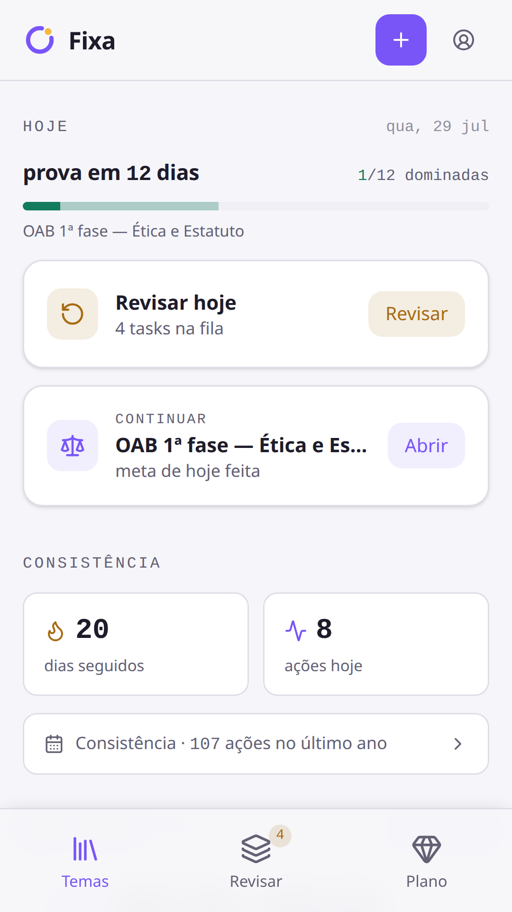
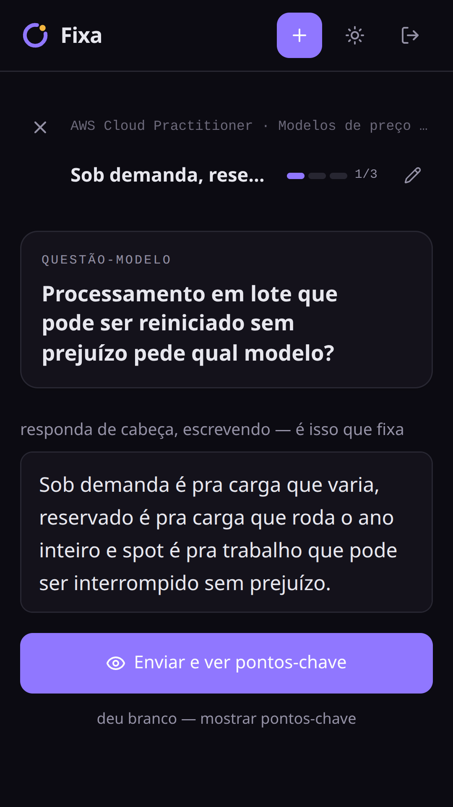
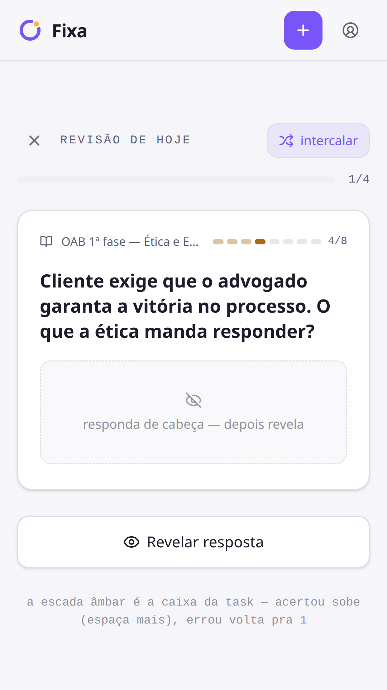
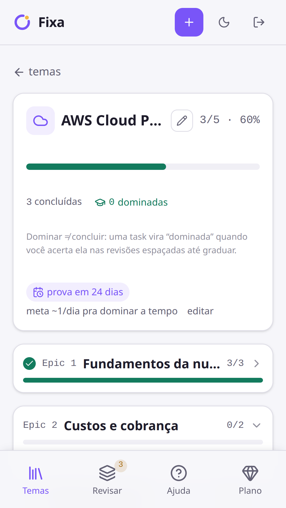
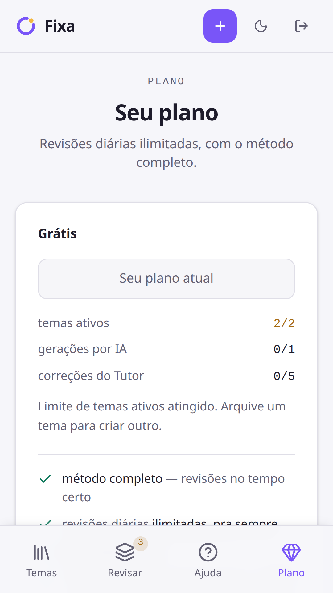

<!doctype html>
<meta charset="utf-8">
<title>Fixa — molduras dos prints da Play (1080×1920)</title>
<!--
  Fixa · molduras dos 5 screenshots da ficha da Google Play.
  Spec: docs/DESIGN-STORE-PRINTS.md

  Cada <section class="quadro" id="quadro-N"> mede exatamente 1080×1920 CSS px.
  Fotografar elemento a elemento (clip do bounding box), sem deviceScaleFactor
  (1080 CSS px = 1080 px reais). Saída: docs/store/frames/N-*.png.

  Os PNGs são referenciados como "screenshots/N-*.png" — este arquivo é feito
  pra viver em docs/store/ (onde screenshots/ é subpasta). No scratchpad há um
  symlink screenshots/ apontando pra lá, então roda dos dois lugares.

  Sem fonte externa, sem CDN, sem JS. Tipografia = Liberation Sans (instalada
  na VM; fallback Noto Sans / Arial / sans-serif).
-->
<style>
  :root {
    /* ── tokens da marca (docs/DESIGN-LOGO.md + web/src/index.css bloco .dark) ── */
    --ink:        #12101b;  /* --background dark */
    --ink-violeta:#2b2154;  /* topo do gradiente, família do feature-graphic */
    --ink-meio:   #1b1630;
    --tinta:      #f5f3fc;  /* headline — --foreground dark, um passo mais claro */
    --recall:     #f4b740;  /* âmbar da marca — a palavra que carrega o benefício */
    --brand:      #7c5cfc;  /* violeta da marca — só no glow do fundo */

    /* ── anatomia (ver §3 do spec) ── */
    --margem-lateral: 90px;   /* respiro do texto */
    --tela-largura:   800px;  /* print a 0.7407 → 1422px de altura */
    --tela-baixo:     120px;  /* base da tela até o rodapé do quadro */
    --headline-topo:  104px;
    --headline-tam:   74px;
  }

  * { margin: 0; padding: 0; box-sizing: border-box; }

  body {
    background: #4a4a55;
    font-family: "Liberation Sans", "Noto Sans", Arial, sans-serif;
    /* só pra inspeção na tela; não entra em nenhum quadro */
    display: flex; flex-wrap: wrap; gap: 40px; padding: 40px;
  }

  .quadro {
    position: relative;
    width: 1080px;
    height: 1920px;
    overflow: hidden;
    flex: 0 0 auto;
    background:
      radial-gradient(120% 58% at 50% -6%, rgba(124, 92, 252, .30), rgba(124, 92, 252, 0) 62%),
      linear-gradient(158deg, var(--ink-violeta) 0%, var(--ink-meio) 44%, var(--ink) 100%);
  }

  /* ── headline: 2 linhas no máximo, quebra manual com <br> ── */
  .quadro h1 {
    position: absolute;
    top: var(--headline-topo);
    left: var(--margem-lateral);
    right: var(--margem-lateral);
    font-size: var(--headline-tam);
    line-height: 1.14;
    font-weight: 700;
    letter-spacing: -0.021em;
    color: var(--tinta);
    text-wrap: balance;
  }

  /* a palavra que carrega o benefício, em âmbar (contraste ~9:1 sobre a tinta) */
  .quadro h1 em { font-style: normal; color: var(--recall); }

  /* ── a tela: print inteiro, sem bezel, cantos arredondados + fio de luz ── */
  .tela {
    position: absolute;
    bottom: var(--tela-baixo);
    left: calc((1080px - var(--tela-largura)) / 2);
    width: var(--tela-largura);
    border-radius: 44px;
    overflow: hidden;
    box-shadow:
      0 48px 96px -24px rgba(0, 0, 0, .78),
      0 0 0 1px rgba(255, 255, 255, .10);
  }
  .tela img { display: block; width: 100%; height: auto; }
</style>

<!-- 1 · HOME — a promessa. Fila do dia + consistência. -->
<section class="quadro" id="quadro-1">
  <h1>Chega na prova sabendo,<br><em>não torcendo</em></h1>
  <div class="tela"></div>
</section>

<!-- 2 · LIÇÃO — o diferencial (recall ativo em estágios). -->
<section class="quadro" id="quadro-2">
  <h1>Reler não fixa.<br><em>Tentar lembrar</em>, sim.</h1>
  <div class="tela"></div>
</section>

<!-- 3 · REVISAR — a outra metade do método (revisão espaçada). -->
<section class="quadro" id="quadro-3">
  <h1>O que ia esquecer<br>volta <em>no dia certo</em></h1>
  <div class="tela"></div>
</section>

<!-- 4 · TRILHA — a estrutura, com a data da prova. -->
<section class="quadro" id="quadro-4">
  <h1>Do zero à prova,<br><em>na ordem certa</em></h1>
  <div class="tela"></div>
</section>

<!-- 5 · PLANO — a objeção (o paywall dos concorrentes). -->
<section class="quadro" id="quadro-5">
  <h1>Revisões ilimitadas,<br><em>sem pegadinha</em></h1>
  <div class="tela"></div>
</section>
